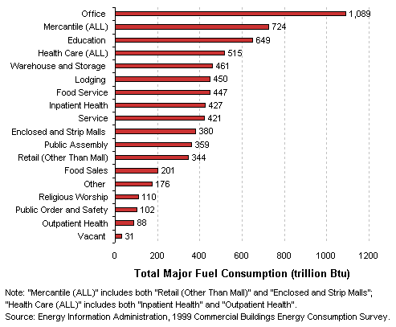
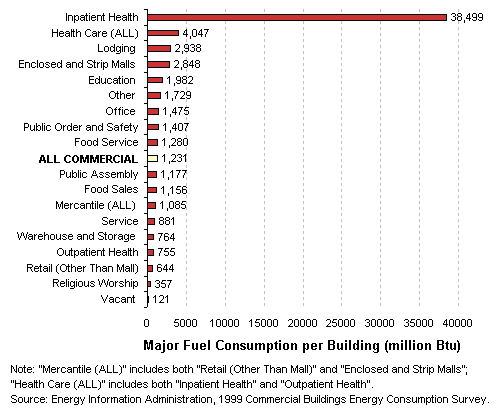
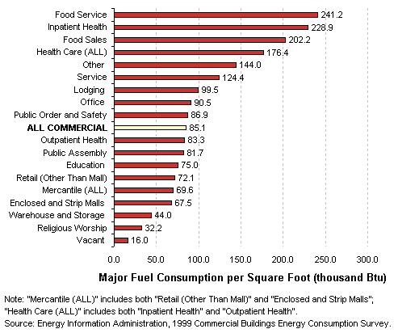
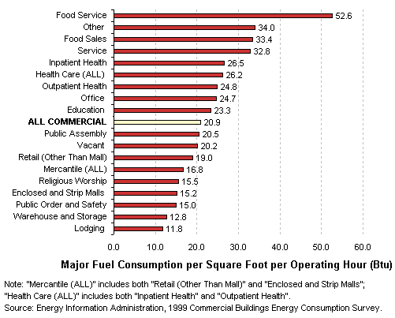

|
Compare Activities by ...
Total Energy Use
Total
Major Fuel Consumption by Building Type
- Commercial buildings in the U.S. used a total of approximately
5.7 quadrillion Btu of all major fuels (electricity, natural gas, fuel oil,
and district steam or hot water) in 1999.
- Office buildings used the most total energy of all
the building types, which was not a surprise since they were the most
common commercial building type and had an above average energy intensity.

Major Fuel
Consumption per Building by Building Type
- Because there were relatively few inpatient health care buildings
and they tend to be large, energy intensive buildings, their energy
consumption per building was far above that of any other building type.

Major Fuel
Consumption per Square Foot by Building Type
- Buildings types
that are more likely to contain specialized, high energy-consuming equipment—food
service (cooking and ventilation equipment), inpatient health care (medical
equipment), and food sales (refrigeration)—were the most
energy-intensive types, all using at least twice as much energy per
square foot as the average commercial building.

Major Fuel
Consumption per Square Foot per Hour by Building Type
- When the hours of building operation were taken into account, building
types that are characterized by long working hours had a lower energy
intensity than those that are normally used for shorter periods of time.
- Inpatient health, which used the most energy per square foot, became
relatively less intensive when operating hours were taken into account,
since hospitals are typically open around the clock.
- Education buildings, on the other hand, which are in use for shorter
periods of time, become relatively more intensive than when looking
just at energy use per square foot.

Top
Specific questions may be directed to:
Joelle Michaels
joelle.michaels@eia.doe.gov
CBECS Manager
Release date: January 21, 2003
Page last modified:
May 4, 2009 2:51 PM
http://www.eia.gov/consumption/commercial/data/archive/cbecs/pba99/compareenergyuse.html
If you are having any technical problems with this
site, please contact the EIA webmaster at wmaster@eia.doe.gov. |